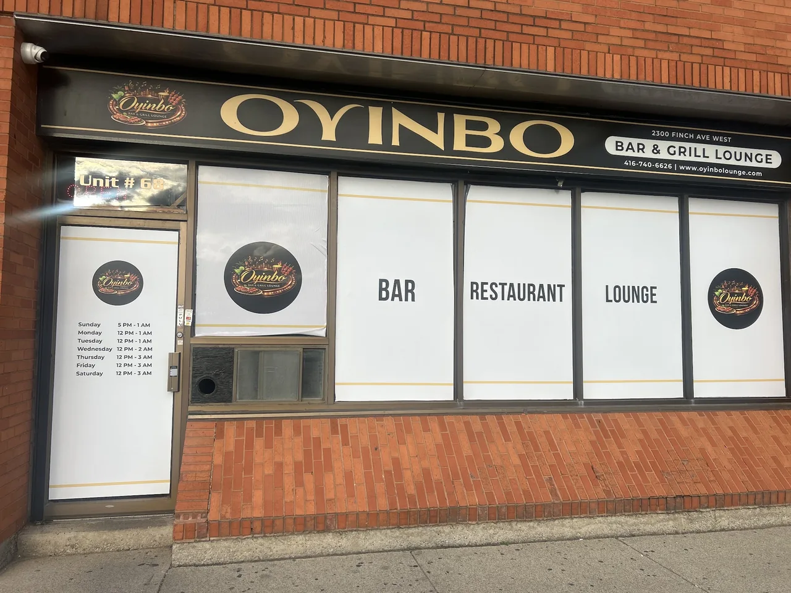

Slow-cooked, not short-cut
Stews that take the time they take. Palm oil, scotch bonnet, and the patience the dishes were built on.
Premium taste. African soul. Nightlife energy. A meeting point of cultures on Finch Avenue West.

Oyinbo is a word used across West Africa for someone from another world — an outsider, a visitor, someone not from here. Putting it on the sign was deliberate. It signals exactly who this place is for: everyone, from every background.
Premium taste. African soul. Nightlife energy.
Founded by Mola Stanley Ilesanmi, the lounge brings the confidence of Lagos hospitality to North York — a kitchen that doesn’t water anything down, a bar that stays open late, and a room where the music carries the night.
Fire-grilled asun, ram and turkey suya, jollof from the auntie’s pot, isi ewu, nkwobi and pepper soups. Nothing dialled down for the room.
Stews that take the time they take. Palm oil, scotch bonnet, and the patience the dishes were built on.
Suya and asun come off a real grill with a real yaji rub. That smoke is the whole point.
Nigerian regulars, first-timers, the whole of North York. The name is the invitation.
Photos from our Google Business Profile — tap any one to see it full size.
2300 Finch Ave W, Unit 68. Open every day, late Thursday to Saturday.